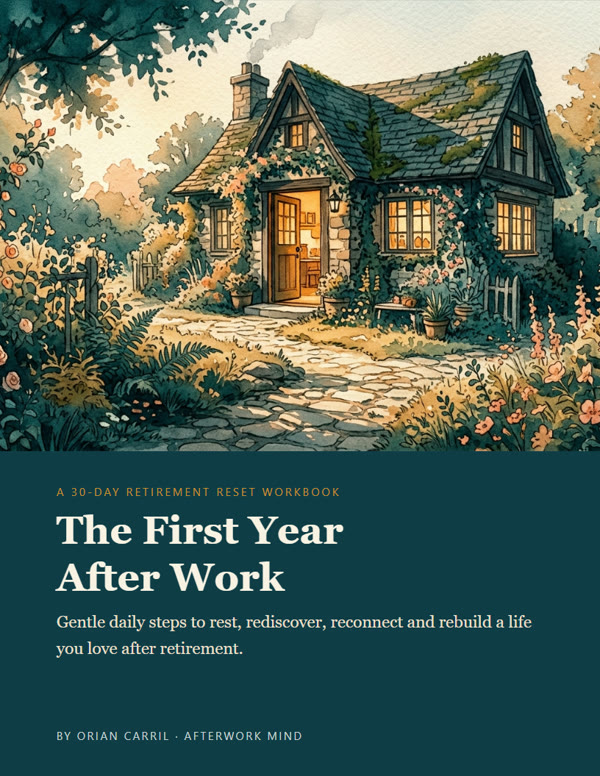
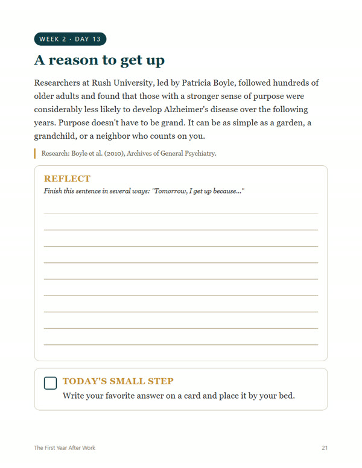
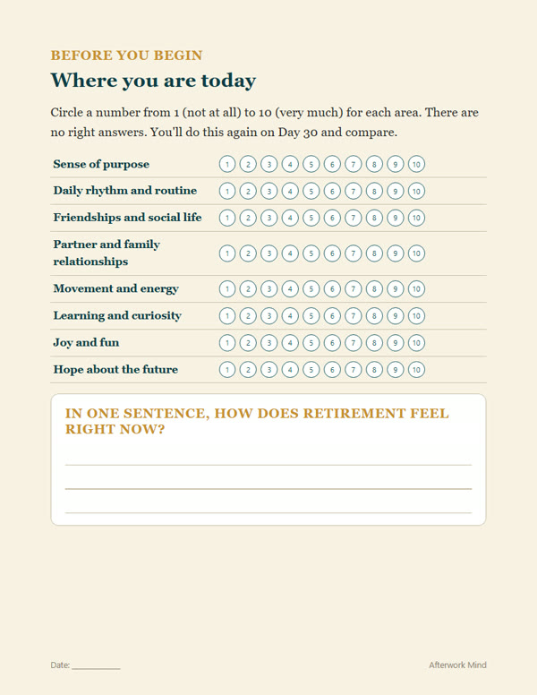
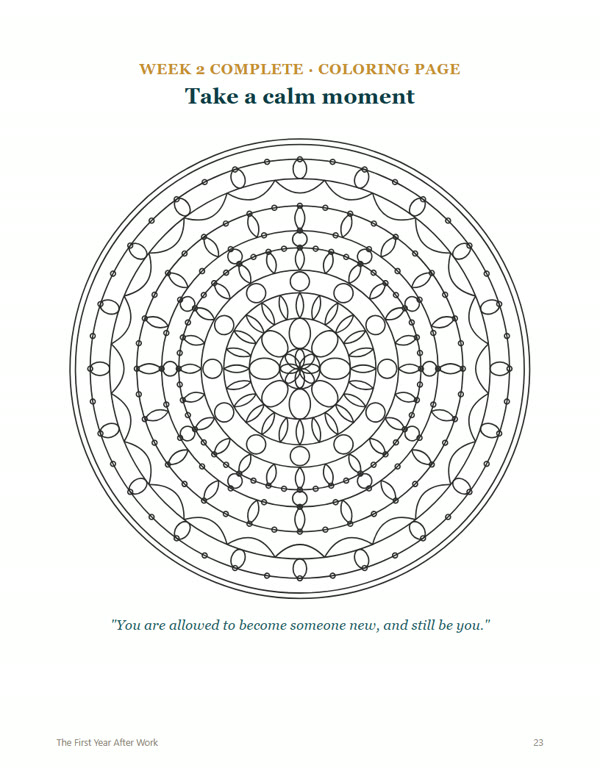
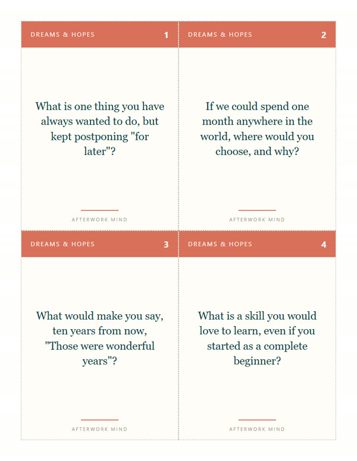

The First Year After Work walks you, one small page a day, from restless and uncertain to calm, connected and looking forward again.
Get the workbook · $17Instant PDF download · 30-day guaranteeNothing is wrong with you. Researchers who study retirement describe it as a transition with phases, not a single day. Relief, restlessness and uncertainty are a normal part of the first year. What helps is a gentle structure, and that's exactly what this workbook gives you.
Each day: a short reading, one question to reflect on, and one small, doable step.
Days 29–30: a letter to your future self and your plan for the next 90 days.




More time together can mean more connection, or more friction. These 40 printable cards help you and your partner talk about what really matters in this chapter, gently and often with laughter.
Five themes: Dreams & Hopes · Our Days · Memories · Space & Balance · Growing Older Together.

Sources are listed inside the workbook. This is a reflection tool, not medical, psychological, legal or financial advice.
No. It's a digital PDF that you download right after purchase. You can print it at home or at a print shop, or use it on a tablet.
US Letter. It also prints well on A4 using "fit to page".
About 10–15 minutes. Go at your own pace: skip, repeat or pause whenever you like.
Yes. It's designed around the first years of retirement, but the exercises help at any stage, and also if you're planning to retire soon.
Absolutely. Many exercises work beautifully as a couple, and the optional Conversation Cards are made exactly for that.
Hotmart sends you an email with access to download the PDF immediately after your purchase.
You're covered by a 30-day money-back guarantee through Hotmart.
Retirement isn't the end of the story. It's a new chapter you get to write, one small page at a time.
Get the workbook · $17Instant download · 30-day guarantee